简介
本文是本人基于哈尔滨工业大学生物信息学整个课程的复习提纲
绪论
组学：
生物学中对某些生物分子的整个集合进行的系统性研究
组学基本法则：
获取大样本-高通量侧学-数据分析-结果注释：生物验证
基因数据库：
SRA数据库：
手机全世界的基因组原始测序数据
GenBank数据库：
1983年起，收集全世界公开发表的DNA序列
GEO数据库：
收集基因表达谱数据，收集超过9.1w数据集
生物信息学：
是研究生物数据管理、存储、检索、分析、挖掘、可视化的算法与系统，实现对生物数据的理解和利用的一个多学科交叉领域。
生物数据和数据库
DNA：
- 一串由ACGT组成的字符串
- 双链结构
RNA：
- 一串由ACGU组成的字符串
蛋白质：
…
生命：
有生命和无生命
- 有生命：可以移动、繁殖、生长、进食，和外界进行物质交换
- 无生命：无法和外界进行物质交换（除了种子，病毒）
- 有生命和无生命都符合相同的物理和化学规则
蛋白质和核酸：
蛋白质：
- 决定生物的性状
核酸：
- 编码蛋白质
- 传递遗传信息
蛋白质：
- 一级结构：组成蛋白质的多肽链的线性氨基酸序列。
- 二级结构：依靠不同氨基酸C=O和N-H基团之间氢键形成的稳定结构
- 三级结构：通过多个二级结构元素的排列形成的一个蛋白质分子的三维结构。
- 四级结构：用于描述由多个不同肽键间相互作用形成具有功能的蛋白质符合物分子
DNA：
碱基：
- A-T, C-G
- A，G：嘌呤
- C，T：嘧啶
非编码RNA：
- 是指不能翻译为蛋白的功能性 RNA 分子
基因转录：
- Promoter （启动子 ）: a region before each gene in DNA; to
serve as an indication to cellular mechanism that a gene is ahead
- mRNA: a copy of gene; with exactly the same sequence as one of
the strands of the gene but substituting U for T
- Introns ( 内含子 ): parts of a gene / not used in protein synthesis;
spliced out from mRNA —>shortened mRNA leaves nucleus with
exons ( 外显子
mRNA翻译：
- 把mRNA翻译成蛋白质的过程。
生物数据库：
分类：
- 基因组数据库
- 核酸序列数据库
- 蛋白质序列数据库
- 生物大分子（主要是蛋白质）三维空间结构数据库
- 对基因组图谱、核酸和蛋白质序列、蛋白质结构以及文献等数据进行分析、整理、归纳、注释， 具有特殊生物学意义和专门用途的二次数据库
NCBI：
- 1988 年 11 月美国国家健康研究所（ NIH ）、国家医学图书馆
NLM ）发起成立。
- 1992 年， NCBI 建立 GenBank 核酸序列数据库，将美国专利商标
局存储的专利序列并入 GenBank 管理，并与 EMBL 、 DDBJ（与 GenBank 并称世界三大生物序列信息数据库）实现数据资源的交换和共享。
GenBank:
- GenBank 是 NIH 遗传序列数据库，集成所有公开可获得的已注释
DNA 序列；
- 核酸序列数据根据不同的研究属性， 分属于 Nucleotide 、 GSS 和 EST
三个子库
- Nculeotide 收录绝大多数常规的核酸序列
- GSS 收录测序起始阶段用来进行序列或基因示踪 、重复序列或基因
数量预判等的各种短读长序列；
- EST 收录 cDNA 及 cDNA 特征序列信息。
RefSeq:
- 收集全世界公开发表的各类物种（人、动植物、微生物等）的参考序列（包括基因组、转录体等）
Gene：
- 基因数据库收录全部已测序物种的基因注释信息。
- 包括基因的命称、染色体定位、基因序列和编码产物（ mRNA 、蛋白质）情况、基因功能和相关文献信息等。
- 与 GenBank 、 OMIM 、遗传多态数据库（如 dbSNP 、dbVar ）等 NCBI 子库，及 KEGG 、 Gene Ontology等外源性数据库进行交叉引用。
dbSNP:
- 收集基因组66个物种的基因组变异数据，目前收集超过3.2亿经过验证的人类基因组变异信息。
dbGap:
- 收集人类基因类型与表型相互作用关系数据。
GEO：
- 接收和管理基因芯片或测序技术获得的表达数据。
Epigenomics:
- 表观基因组数据查询和浏览相结合的数据库
Unigene：
- 分别将不同来源的基因序列、蛋白质相似性（与模式生物比较）、基因表达（不同组织或发育状态）、染色体定位、cDNA 序列、 mRNA 序列（选择性剪接）、 EST 序列等进行罗列和比较。
UCSC基因组浏览器和数据资源：
- UCSC 收录了包括人类基因组在内的 48 种哺乳动物（ mam mal ）、 19 种其他
脊椎动物（ vert e brate ）、 3 种后口动物（ deuterostome ）、 20 种昆虫（insect ）、线虫 nematode ）等众多动物，及病毒 virus ）、酵母等微生物全基因组数据。
- 包括基因和基因结构、开放读码框、 mRNA 、 EST 、转录本、非编码基因、基因表达、基因调控、基因变异（ SNPs 、微缺失、微插入等），及重复序列等信息。
BLAT序列比对工具：
- 支持目标序列与参考基因组进行 DNA 或蛋白序列比对。DNA比对
- 快速寻找 95% 或更高的匹配度的 40 碱基以上相似序列，可能会丢失低匹配度的短片段序列。蛋白序列比对
- 快速搜索比对长度在 20 氨基酸以上、相似性超过 80% 的序列。
序列匹配
一致度：
- 如果两个序列（蛋白质或 DNA ）长度相同，那么它们的一致度定义为他们对应位置上相同的残基（一个字母，氨基酸或碱基）的数目占总长度的百分数。
相似度：
- 如果两个序列（蛋白质或 DNA ）长度相同，那么它们的相似度定义为他们对应位置上相似的残基与相同的残基的数目和占总长度的百分数。
打点法：
- 比较序列重叠部分
- 寻找序列的重复部分
双序列全局比对算法：
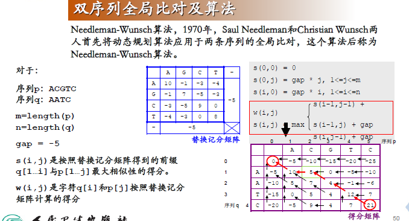
双序列局部比对算法：
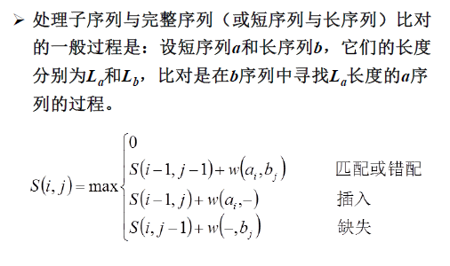
![双 序 列 局 部 比 对 及 算 法 全 局 比 对 。 m 亡 m) ： 用 于 比 较 两 个 长 度 近 似 的 序 列 局 部 比 对 (localaligment) ： 用 于 比 较 一 长 一 短 两 条 序 列 1981 年 Temp smi 宙 和 MichaelWa 忙 m ] an 对 局 部 比 对 进 行 了 研 究 》 产 生 了 Smith-Waterman 算 法 。 序 列 p ： ACGTC 序 列 q ： CG 得 分 矩 阵 字 符 对 字 符 序 列 p 字 符 对 空 位 序 列 q 箭 头 指 看 的 序 列 为 空 位 局 部 序 列 比 对 结 果 ： 16 字 符 对 空 位 序 列 p 箭 头 指 看 的 序 列 为 空 位 序 列 q 全 局 序 列 比 对 结 果 ： 1](file:///C:/Users/luoli/AppData/Local/Temp/msohtmlclip1/02/clip_image003.png)
![一 致 度 和 相 似 度 的 正 确 算 法 如 果 两 个 序 列 长 相 同 ： 一 致 度 (identity) 相 似 度 （ similarity) （ 一 致 字 符 的 个 数 / 全 局 比 对 长 度 ） × 10 “ （ 一 致 及 相 似 的 字 符 的 个 数 / 全 局 比 对 长 度 ） × 100 序 列 1 ： CVHK-LA identity ： （ 4 / 7 ） * 100 57 月 ． 歹 ] 2 ： C—HKTIA similarity ： （ （ 4 + 1 ） / 7 ） 100 71 如 果 两 个 序 列 长 度 不 相 同 ： 一 致 度 (identity) ： （ 一 致 字 符 的 个 数 / 全 局 比 对 长 度 ） × 10 “ 相 似 度 （ similarity) 一 （ 一 致 及 相 似 的 字 符 的 个 数 / 全 局 比 对 长 度 ） × 10 “ 月 ． 屮 ] 1 ： CVHKAT identity ： （ 4 / 6 ） * 100 67 月 ． 歹 ] 2 ： CIHK T similarity ： （ （ 4 + 1 ） ／ 巧 ） 噙 100 83 无 论 两 个 序 列 长 度 是 否 相 同 》 都 要 先 做 双 序 列 全 局 比 对 》 然 后 根 据 比 对 结 果 及 比 对 长 度 计 算 它 们 的 一 致 度 和 相 似 度](file:///C:/Users/luoli/AppData/Local/Temp/msohtmlclip1/02/clip_image004.png)
Seeding
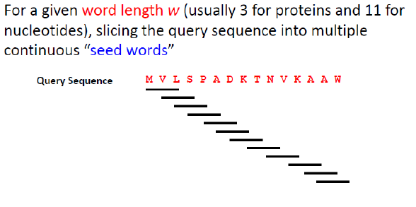
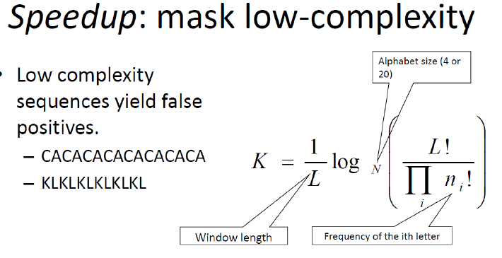
分子进化分析
从物种的一些分子特性出发，从而了解物种之间的生物系统发生的关系。
分子进化的模式：
DNA突变的模式：替代，插入，缺失，倒位；
核苷酸替代：转换(Transition) & 颠换(Transversion)
基因复制：多基因家族的产生以及伪基因的产生
- A. 单个基因复制– 重组或者逆转录
- B. 染色体片断复制
- C. 基因组复制
分子进化的目的：
- 物种分类及关系：从物种的一些分子特性出发，构建系统发育树，进而了解物种之间的生物系统发生的关系—— tree of life
- 大分子功能与结构的分析：同一家族的大分子，具有相似的三级结构及生化功能，通过序列同源性分析，构建系统发育树，进行相关分析；功能预测
- 进化速率分析：例如，HIV的高突变性；哪些位点易发生突变？
系统发生与重建：
基因的编码区和非编码区：
- 基因的DNA由编码区（Coding region）和非编码区（Noncoding region）构成；
- 编码区可以转录信使RNA，进而调控蛋白质的合成；
- 非编码区不能转录成信使RNA，但是它可以调控遗传信息
的表达；
- 原核基因：编码区全部编码蛋白质；
真核基因：编码区分为外显子和内含子,只有外显子能编码蛋白质；
两个序列间的核苷酸差异：
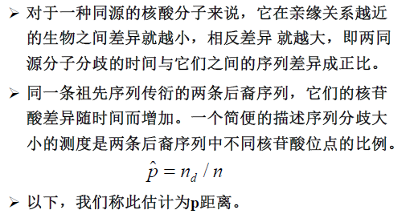
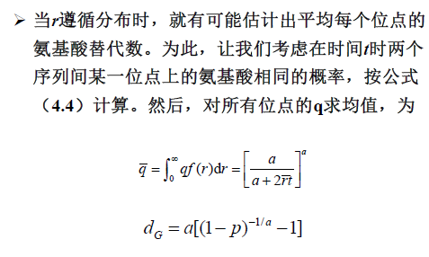
基于距离法构建系统发生树
距离矩阵
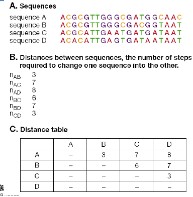
通过距离构建树
同组合并，距离相加/2
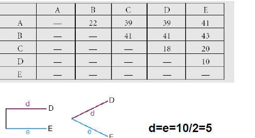
19=（18+20）/2
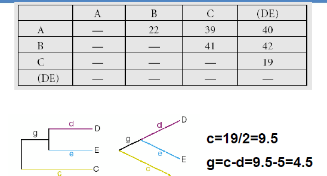
基于最小二乘法构建系统发生树
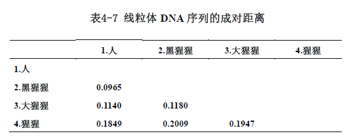
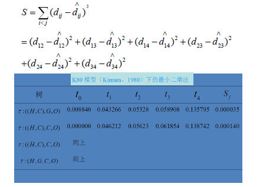
分子钟假说：
- 分子钟（molecular clock）假说认为DNA或蛋白质序列的进化速率随时间或进化谱系保持恒定。
- 最简单的分子钟假设检验是采用第三个物种C（外
类群）来检验两个物种A和B是否以相同的速率进
化。这一检验称为相对速率检验（relative-rate
test），其实几乎所有的分子钟检验比较的都是相
对速率而不是绝对速率。
蛋白质和核苷酸的适应性进化
中性与近中性理论：
按照中性理论，我们今天观察到的遗传变异——无论是种内多态性还是中间分歧，均不取决于自然选择所驱动的有利突变的固定，而是取决于那些事实上没有适合效应（即中性的）突变的随机固定。
这个理论认为在分子遗传学的层次上，基因的变化大多数是中性突变，也就是对生物个体的生殖与生存既没有好处也没有坏处的突变。由于中性突变并不受自然选择影响，而是由中性的突变基因的遗传漂变产生的，因此中性理论也曾被认为是与查尔斯·达尔文的自然选择论处于竞争状态。另外木村资生提出突然变异产生的蛋白质和原本的蛋白质之间没有适应性的差异时的突然变异则称为中立突然变异的理论
主要内容：
- 承认负选择。
- 认为正选择力量很小。
- 强调功能约束。
- 功能的约束造成不同的基因突变速率不同。
- 功能重要的部分变化会影响其功能，大多数的变化均饱受负选择作用。
- 功能不很重要的部分变化多，不影响功能，被随机保留。
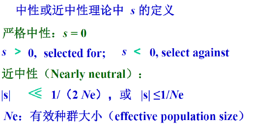
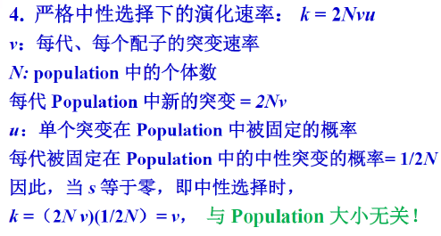
经典演化和分子演化的区别
经典演化以形态特征为主：如被子植物的花：花瓣离生-花瓣合生
- 自然选择成为主要驱动力
分子演化的特征：
- 种群内以随机选择（遗传漂变）为主要驱动力
蛋白质水平演化速率：
不同位点上的氨基酸替代率相同，或即使不相同，平均替代速率也很小
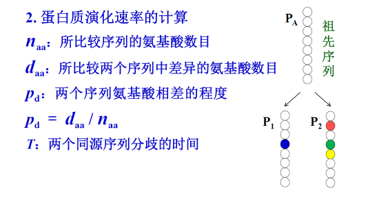
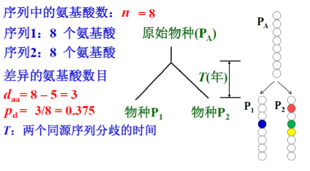
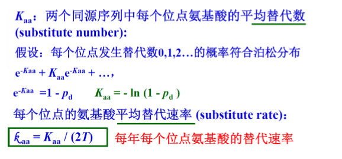
分子钟：
一个特定的大分子（蛋白质或DNA）在所有演化谱系中具有恒定的演化速率
得到速率的关键：大分子(物种）的分歧时间
- 时间很难预测
- 最真的使用化石或者地质事件
- 相对速率：用一分歧时间早于所研究的物种作为参考
- 先决条件：演化速率恒定
基因表达数据分析
基因表达的时间性和空间性
时间特异性：
- 是指特定基因的表达严格按照特定的时间顺序发生以适应细胞或个体特定分化、发育阶段的需要，故又称为阶段特异性。
空间特异性：
- 是指多细胞生物个体在特定生长发育阶段，同一基因表达在不同的细胞或组织器官不同，从而导致特异性蛋白质分布于不同的细胞或组织器官。故又称为细胞 特异性或组织特异性。
基因表达方式：
组成表达：
- 指在个体发育的任一阶段都能在大多数细胞中持续进行的基因表达。
- 其基因表达产物通常是对生命过程必需的或必不可少的，且较少受环境因素的影响。
- 这类基因通常被称为管家基因（housekeeping gene）。
诱导和阻碍表达：
- 诱导表达（Induction）是指在特定环境因素刺激下，基因被激活，从
而使基因的表达产物增加。这类基因称为可诱导基因。
- DNA损伤→修复酶基因激活
乳糖→利用乳糖的三种酶表达
阻遏表达（repression）是指在特定环境因素刺激下，基因被抑制，从而使基因的
表达产物减少。这类基因称为可阻遏基因。
协调表达和协调调节：
在一定机制控制下，功能上相关的一组基因，无论其为何种表达方式，均需要协调一致，共同表达。
基因表达数据的分析：
- 分析单个基因的表达水平，根据在不同实验条件下，基因表达
水平的变化，来判断它的功能，采用的分析方法有统计学中的假
设检验等。
- 考虑基因组合，将基因分组，研究基因的共同功能、相互作用
以及协同调控等。多采用聚类分析等方法。
- 尝试推断潜在的基因调控网络，从机理上解释观察到的基因表
达数据。多采用反向工程的方法。
基因表达测定方法RT-qPCR
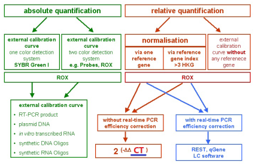
基因表达测定平台与数据库：
cDNA芯片：
- – cDNA是与mRNA互补的DNA分子，长约0.2~5kb
- – 通过碱基互补配对原则进行探针与待测mRNA之间的分子杂交产生信号，反映待检mRNA水平，在一定程度上体现基因的表达水平
Typical-RNA-Seq experiment:
①内容： RNA-seq技术就是把mRNA切成许多长度介于
100bp~200bp的短片段，然后反转录合成cDNA，进行PCR扩增，利用高通量测序技术获得相关的基因表达信息。
②优势：有助于探索真核转录的复杂性，此外还提供了比其他方法更精确的转录水平及其亚型的测量方法。
Microarray技术与RNA-Seq技术的比较：
1.RNA-Seq技术对没有已知参考基因组信息的非模式生物，也可测定转录信息；
2.RNA-Seq技术可以测定转录边界的精度达到一个碱基，RNA-Seq可以用来研究复杂的转录关系；
3.RNA-Seq可以同时测定序列的变异；
4.RNA-Seq背景信号很小，测定的动态范围很大。
Ø RNA-Seq在基因表达的定量上准确性很高；
Ø RNA-Seq在测定技术上和生物上重复性很高；
Ø RNA-Seq的测定需要很少的RNA样本。
Ø 在应用上RNA-Seq技术对ISOFORM的测定和等位基因的区分比芯片技术有很好的优势。
基因表达数据库：
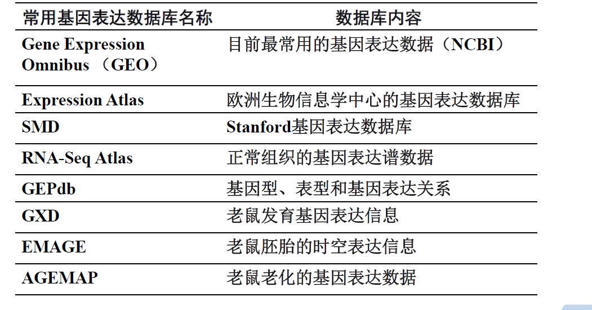
疾病相关基因表达数据库
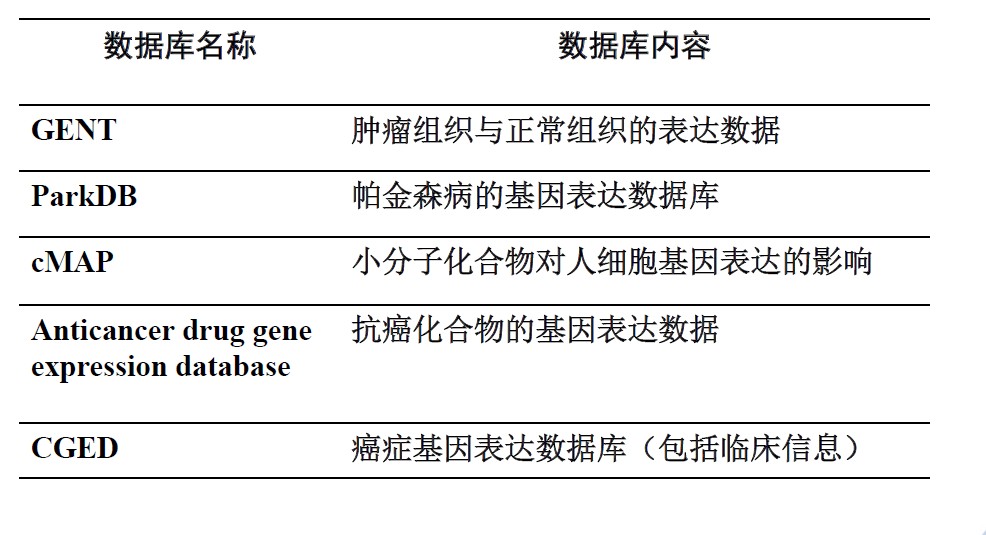
数据预处理与差异表达分析：
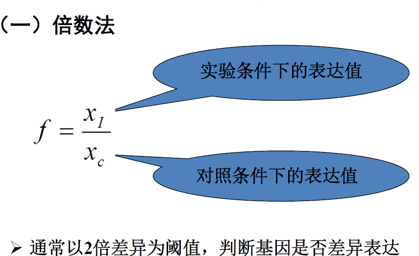
表达量的计算
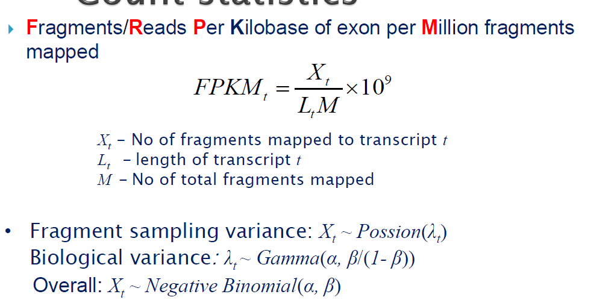
t检验法：
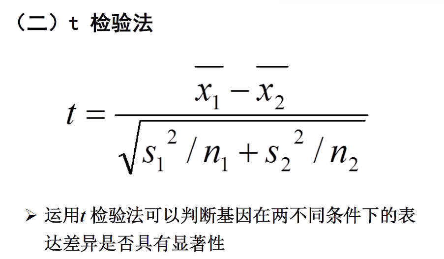
方差分析：
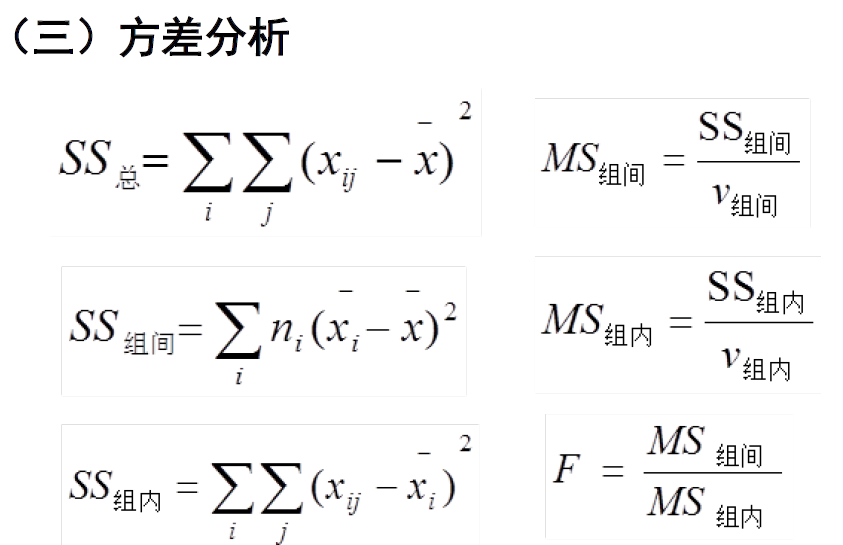
SAM方法：
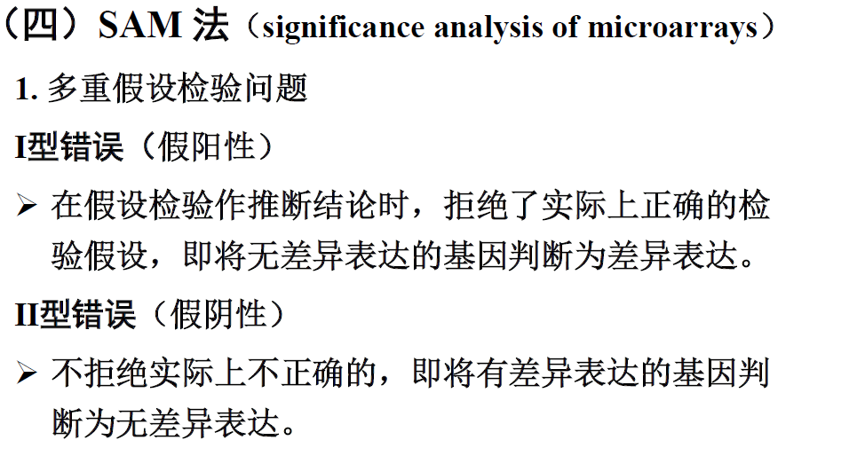
基因注释与功能分类：
功能基因组学的主要任务之一是进行基因组功能注释（genome annotation），了解基因的功能，认识基因与疾病的关系，掌握基因的产物及其在生命活动中的作用等。
快速有效的基因注释对进一步识别基因，研究基因的表达调控机制，研究基因在生物体代谢途径中的地位，分析基因、基因产物之间的相互作用关系，预测和发现蛋白质功能，揭示生命的起源和进化等具有重要的意义。
Go数据库：
基因本体数据库是GO组织（Gene Ontology Consortium）在2000年构建的一个结构化的标准生物学模型，旨在建立基因及其产物知识的标准词汇体系，涵盖了基因的细胞组分（cellular component）、分子功能（molecular function）、生物学过程（biological process）。
Go注释
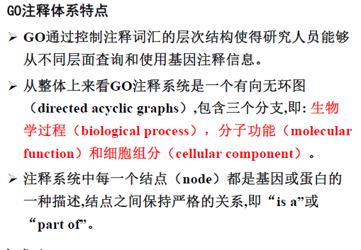
KEGG数据库：
京都基因与基因组百科全书（Kyoto encyclopedia of genes and genomes, KEGG） 是系统分析基因功能、基因组信息的数据库，它整合了基因组学、生物化学以及系统功能组学的信息，有助于研究者把基因及表达信息作为一个整体网络进行研究。
基因集功能富集分析
- 富集分析方法通常是分析一组基因在某个功能结点上是否过出现（over-presentation）。这个原理可以由单个基因的注释分析发展到大基因集合的成组分析。
- 由于分析的结论是基于一组相关的基因，而不是根据单个基因，所以富集分析方法增加了研究的可靠性，同时也能够识别出与生物现象最相关的生物过程。
基因功能预测
- 首先，从总体上宏观地概括抽取信息，如不同样本间、不同时间点间全部差异基因；
- 其次，通过GO或KEGG分析，即从GO分类结果找到实验涉及的显著功能类别或将差异基因映射到通路中，
根据基因在通路中的位置及表达水平的变化算出受影响显著的通路，从而预测未知的基因功能等。
基于Go的基因功能预测：
- 对差异表达基因进行功能预测
- 蛋白质互作用网络用于基因功能预测
- 利用GO体系结构比较基因功能
基于KEGG通路分析的基因功能预测：
通路分析是现在经常被使用的芯片数据基因功能分析法。与GO分类法（应用单个基因的GO分类信息）不同，通路分析法利用的资源是许多已经研究清楚的基因之间的相互作用，即生物学通路。研究者可以把表达发生变化的基因集导入通路分析软件中，进而得到变化的基因都存在于哪些已知通路中，并通过统计学方法计算哪些通路与基因表达的变化最为相关。
生物分子网络与通路：
生物学通路：
- 生物学通路是指由生物体内一系列生物化学分子，包括基因、基因产物极其化合物，通过各种生化级联反应来完成的某一个生物学过程。
- 生物体内最主要的生物学通路就包括代谢通路和信号传导通路。
转录调控网络：
- 描述转录因子，极其调控的基因之间的关系
- 有向图
- 其中点表示转录因子或者被调控的基因，边表示转录因子对基因的调控关系，箭头指向被调控的基因
mRNA：
- miRNA是基因调控网络中的主要组分，在人类细胞中有~1200miRNA，miRNA可以在转录后和翻译水平
上调控多于30%的编码基因的表达。
- miRNA和靶基因间不是简单的一对一的关系，而是复杂的多对多的关系，形成了复杂的转录后调控网络。
- 其中网络中包含两种类型的节点，miRNA和靶基因，网络的边代表miRNA对于靶基因具有调控作用。
- miRNA-靶基因的转录后调控网络是一种典型的二分网络，网络的边只存在于miRNA集合和靶基因集合之间，而miRNA集合和靶基因集合内部并不存在调控关系。
蛋白质互作用数据库：
- HPRD数据库
- BIND数据库
- DIP数据库
- IntAct数据库
- BioGRID数据库：基因和蛋白质相互作用的数据库
代谢网络：
- 代谢通路是指细胞中代谢物在酶的作用下转化为新的代谢物过程中发生的一系列生物化学反应
- 代谢网络则是指由代谢反应以及调节这些反应的调控机制所组成的描述细胞内代谢和生理过程的网络
完全网络
- 最完整的保存代谢通路中各个反应，以及每个反应中的底物、产物和酶。
多反应物网络
- 代谢物只由一个节点表示，边由底物指向产物，酶与底物、产物之间的边则可以由双向边来表示。
主要反应物网络
- 只包含主要代谢底物指向主要产物的网络。
信号传导网络：
- 生物中的信号传导(Signal transduction)则是指细胞将一种类型的生物信号或刺激转换为其他生物信号
最终激活细胞反应的过程。
- 同代谢通路一样，信号传导的过程中多个生物分子在酶作用下按照一定顺序发生一系列生理化学反应，
由此得到了信号传导通路。
- 信号传导网络即是指参与信号传导通路的分子和酶以及其间所发生的生化反应所构成的网络。
生物分子网络分析：
连通度和图的连通度
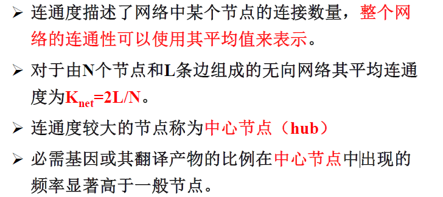
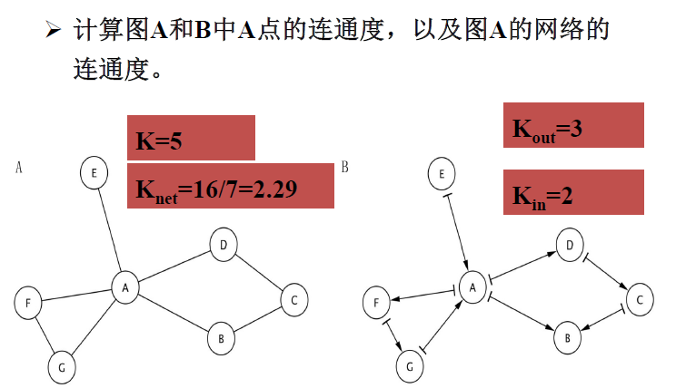
聚类系数：
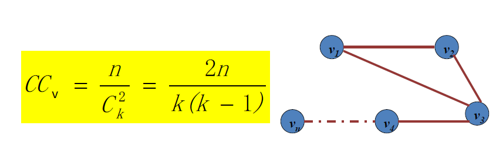
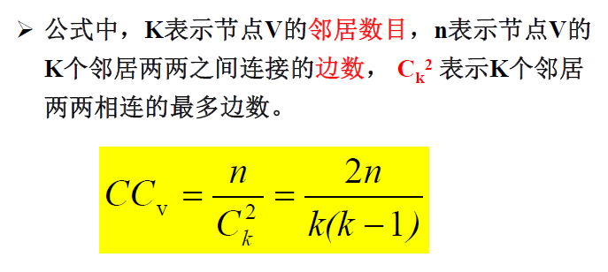
有向网络聚类系数：
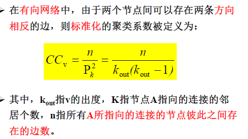
边介数：
边介数：网络中所有最短路径中经过该边的路径的数目占最短路径总数的比例。
紧密度：
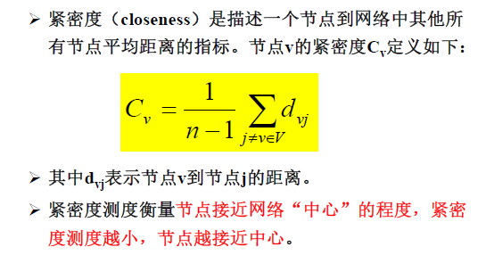
拓扑系数：
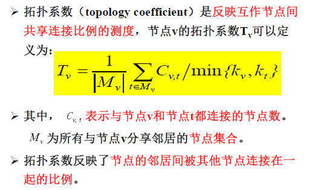
直径：
网络的直径是指网络中任意两个连通节点间距离的最大值。
连通度分布函数和聚类系数函数：
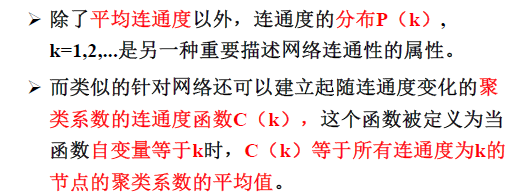
C（k）连通度为k的节点聚类系数的平均值。
无标度网络：
- 由于这类网络的节点连接度没有明显的特征长度，故称为无标(尺)度网络。
- 特征长度是属于分形几何的概念。对于某个物体, 特征长度通常是指该物体长度中有代表意义的长度, 如我们考察一个球体, 那么它的特征长度就是该球体的半径或直径。对于具有特征长度的物体, 只要其特征长度不变, 其性质就不会发生什么变化。
- 无标度网络中，大部分节点通过少数中心节点连接到一起，这就意味着节点在网络中的地位是不平等的，中心节点在连接网络完整性方面起更加重要的作用。
- 在无标度网络中大部分节点的连通度较低，但存在少数连通度非常高的节点使网络连接在一起。在这种网络中，平均连通度等标度已经不足以描述网络的规模和结构。
计算表观遗传学：
表观遗传学是研究不涉及DNA序列改变的情况下，DNA甲基化谱、染色质结构状态和基因表达谱在细胞代间传递的遗传现象的一门科学。
- 预测的角度研究表观遗传现象。
- 应用生物信息学工具建立遗传与表观遗传调控网络。
- 表观遗传数据库。
- 建立在表观遗传机制基础的功能基因组及比较基因组研究。
DNA甲基化：
- DNA甲基化是一种发生在DNA序列上的化学修饰，可以在转录及细胞分裂前后被稳定地遗传。DNA甲基化是重要的表观遗传代码。
CpG岛：
- CpG岛是重要的调控元件,可用于新基因的发现。CpG岛通常是不被甲基化的，作为管家基因的重要标志之一。
测定蛋白修饰的高通量技术：
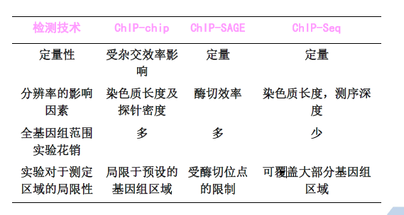
复杂疾病的分子特征与计算分析
复杂疾病的分子特征
- 遗传和环境因素共同决定
- 多基因决定
- 单核苷酸多态性
- 连锁不平衡
- 单体型
常用复杂疾病相关数据库
- OMIM
- dbGap
- CGAP
- HGMD
- GeneCards
复杂疾病遗传学研究方法
连锁分析
- 参数连锁分析
- 非参数连锁分析
关联分析
- 质量性状关联分析
- 数量性状关联分析
非编码RNA与复杂疾病
- miRNA多态（miRNApolymorphisms）是影响miRNA功能的多态，可能发生在miRNA形成和行使功能的任一个过程，以插入、删除、扩增或染色体异位的形式出现，最终导致miRNA绑定位点或者功能的缺失（获得），是人类基因组一类新的功能多态。
- 不仅会影响miRNA的产生和表达，而且会影响miRNA与靶基因的结合从而影响靶基因的表达。
miRNA靶基因预测遵循的原则和基本步骤
- miRNA的“种子区”与mRNA的3′UTR序列碱基互补
- 靶点在多物种间的序列保守性
- miRNA与mRNA形成双链结构的热力学稳定性
- 靶基因二级结构和靶点外的序列对靶基因预测的影响